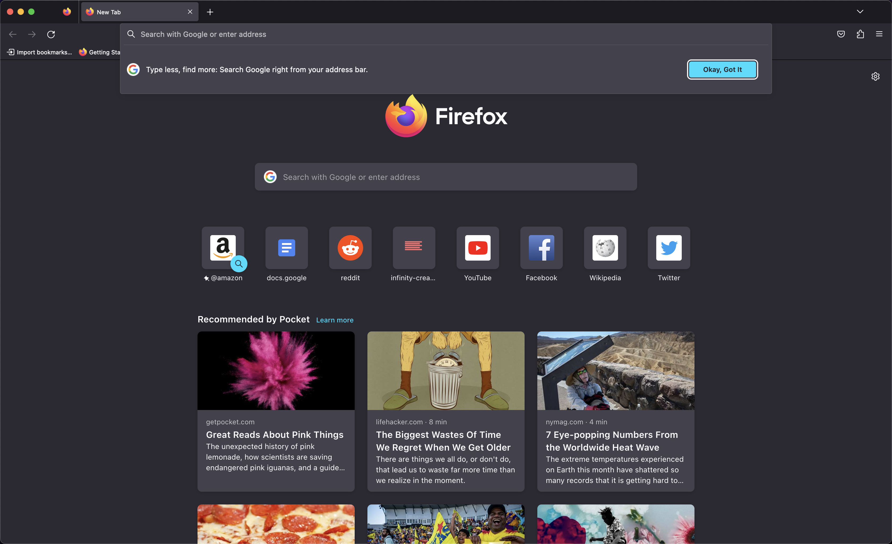
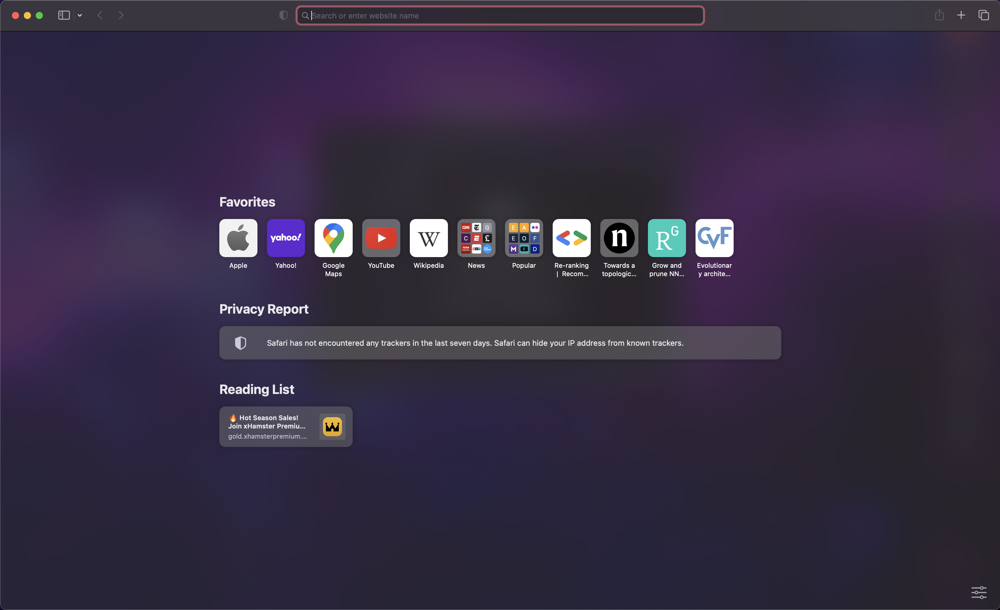
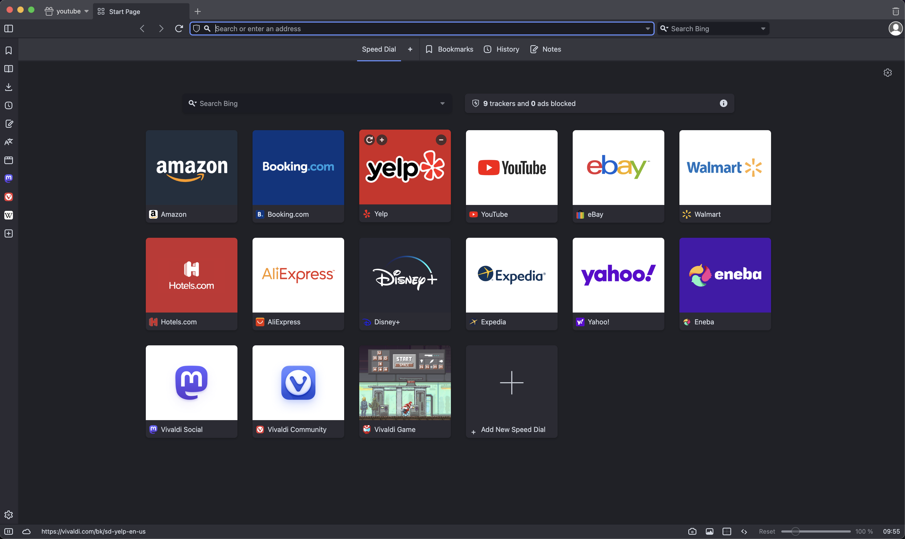

7 Best Chrome Alternatives Ranked
Intro
As you well know the most popular web browser is Google Chrome, with around 60% market share and a whopping 3 billion users. However, the fact that Google Chrome is the most popular browser does not mean you should use it. The main reason for this is privacy and the lack of useful features that are built-in in other browsers. Some alternatives include Firefox, Brave, and even Safari for Mac users. Here I'll be ranking the top 10 web browsers that I find the best. Have fun reading :)
Table of Contents
Chrome
Why People Like Chrome?
You might be wondering why people still use Chrome if Google robs you all your data and there are better browsers out there. The thing is that we have to go back to the time when Chrome was made. At the time there was only one browser that 19/20 people used which was Microsoft Internet Explorer or short IE.
Using it was an absolute nightmare so as soon as Google offered Chrome and Mozilla showed Firefox everyone switched browsers. Google also made Chrome very appealing to developers by introducing Developer Tools and allowing for extensions to be installed.
Since then, many people already have a habit of using Chrome, even though everything has changed so much.
Why Chrome won over Firefox?
So Why did Chrome win over Firefox since both browsers had a chance to win in the late 2000s, the reason is, Chrome's UI is just better designed, and Chrome also offers the whole Chrome Web Store where you can download extensions from. Firefox was also created by a smaller company than the mighty Google Chrome. All these factors led to the situation we are in today, with Chrome dominating every aspect of web browsing.
Alternatives:
Opera and Opera GX

My top pick is Opera which is a feature-packed browser that can offer the best experience. I use this browser as my daily driver and I like it a lot more than my previous experience with Chrome and Safari. I may be a bit biased on this, but I like this browser a lot.
I use a different version of Opera called Opera GX which is a browser for gamers, but anyone who wants a very personalized browser can use it.
Opera has some fantastic built-in features like a crypto wallet a free VPN and an ad blocker which can even block Youtube in-video ads which makes your watching experience much more enjoyable.
You also can install mods to Opera GX and make your browser your own. I also love the fact that there are background music and browser sounds that play when you close or open a tab or type. If you don't like this you can always turn it off.
The regular Opera version also has an in-browser AI called Aria it is and AI tool which was made with the collaboration of Opera and Openai so have some fun chatting.
If you're worried about not having all the browser extensions that you had in Chrome, it's okay because Opera is a Chromium-based browser which means that everything that works in Chrome works in Opera too.
Opera is the go-to browser if you want to have the most personalized experience and have a fun time using your browser.
Sidekick

Sidekick is a very little-known productivity browser that has tons of very cool features for productivity. I use it as a secondary browser to Opera GX which is currently my primary browser.
The main reason I like this browser is that it is very structured. You have accounts, workspaces, and sessions. This allows for extreme productivity to happen. The browser sped up my workflow quite a bit during my testing. Tab clutter isn't a thing at all in the browser, it has more than enough features to stop that from happening.
Something I also like a lot is the split view which is again targeted to increase productivity. Split view has also been a game changer for the time when I tested the browser, even though Opera also has it built in, it's not as streamlined and seamless as in Sidekick.
If you want ultimate customizability as I do, I sadly have to tell you that this browser isn't for you, but for the average person, this was more than enough options to get started. The Screenshot above was taken with my custom theme.
You also can integrate apps you use into the sidebar making the browser the go-to place for any chats, writing, posting, socializing and so much more. All the things you did outside your browser before can now be done inside it.
Firefox
If you just want to browse the web and have a vanilla experience without any extensive customization then you'll want to check out Firefox. You'll also be pleased by Firefox if you want to get away from the Google Ecosystem and check out a product that is made entirely by someone else.
Firefox isn't feature-packed like Opera, its main goal is to make your browsing experience clean and smooth, it is a bit slower than Chrome though, but not something I noticed when testing it out.
There are though some things that many people concerned about privacy won't like, such as the pocket feature as it collects your information and sends it to companies like Google. You can turn this off though so don't worry.
Firefox's interface is even arguably better than Chrome's because of its simplicity and cleanness. The tabs look polished, the search bar is great and there are almost no distracting features.
There is a catch though, if you absolutely can't live without having a few browser extensions you won't like it. Since Firefox isn't a Chromium-based browser it isn't compatible with the Chrome web store.
Brave

Brave is a private browser that is very similar to Opera and Opera GX, it has a clean interface with a few distractions that you can turn off. My experience with it was very similar to Opera GX so I had no reason to switch.
If you are concerned about privacy, you'll like this browser, it has a search engine that Brave claims to be privacy respecting. Brave also blocks all ads and trackers from profiling you just like Opera and Safari. It can even block Youtube ads which are very impressive.
The browser is Chromium based so all your extensions from Chrome will work here. It is a bit slower than Chrome though, but not that I noticed anything. Though if you want your browser to be lightning fast, you'll need another browser.
Brave Rewards is also a feature to look forward to, basically, you get a few ads per hour, and when you close them Brave rewards you with Cryptocurrency. If you want to get a few bucks per day you can turn it on, but I find it very annoying.
Safari
Yes, you heard me correctly, Safari is also a great alternative to Chrome, though sadly it is only available on macOS and iOS devices. Safari offers great privacy separate tab spaces and much more.
If you're concerned about design, you won't like Safari though, excuse me, but Apple can you please tell me what you were thinking about when you put your plus icon in the top right corner of the screen, every other browser has it on the right side of the last tab.
Where Safari is great though, is privacy, their recent updates to block trackers and ads have made Safari more attractive than ever.
Safari also has a reputation of being a very unusual browser, the tabs are under the search bar instead of above it. If you switch then you'll have to adapt to it for a while, but as with everything you'll get used to it.
Something else that Safari lacks is customization, the theme is either light or dark, depending on your device, the extensions you get are extremely limited and you have to go to the App Store itself to just download them.
This is also a browser with its own browser engine which makes the Chrome Web Store incompatible with it, so no extensions from Chrome.
Edge

Microsoft Edge is yet another alternative browser to Google Chrome, it is based on Chromium and has many cool features like integrated AI and much more. It is also the default browser on Windows so if you are using Windows you already have it installed.
Sometimes people say that Edge is a sequel to Internet Explorer and that nobody should use it because it's as bad as IE. IE and Edge have little in common, Edge is based on Chromium and has a different system than IE altogether.
Something I find very cool about Edge is its AI Bing. Bing AI is one of the smartest AI chatbots in the world. No wonder since it's made by Microsoft which is now very known for making products of exceptional Quality.
Edge also features a Sidebar which makes it a more personalized browser than Chrome.
Vivaldi
Vivaldi is the go-to browser if you want to customize absolutely everything, from the layout of the tabs to the details in the sidebar. The customization features are immense, just like in Opera, but there are even more.
The Browser has many inbuilt features like a crypto wallet VPN and much more. It is considered to be a safer browser than Chrome and can be customized beyond the extent of any other browsers. Vivaldi can look very different from its default theme to the one I have.
The design of the vanilla version isn't stunning, but it is worth noting that the browser does have other layouts, like the one I have and they look okay.
Vivaldi's tab management features are also very good and allow you to structure your tabs intuitively avoiding tab clutter. Vivaldi also allows workspaces which is always a nice touch to any browser.
In addition to its customization and tab management features, Vivaldi prioritizes privacy and security. The browser includes a built-in tracker blocker, that provides users with greater control over their entire online privacy and protection against annoying ads and website tracking, making it also a great choice for privacy and security focused users.
What I use
I use Opera and Sidekick for different things, Sidekick for productivity and Opera for entertainment, though Sidekick is my default browser it lacks many customization features that Opera has. I hope they will add more because the browsing experience is great and very intuitive.
I recommend using different browsers for different things because I rarely do non productive tasks in Sidekick, but in Opera it's all about the fun.
Conclusion
All of these browsers are great, each of them may suit you more than another, If you want customization, then choose Opera, if you want to browse casually use Firefox and for Productivity, use Sidekick.
Choosing a different browser than I use is completely okay since it might suit your needs better than Sidekick or Opera. With all these browsers out there the choice is yours, I hope this article has helped you choose your preferred browser.